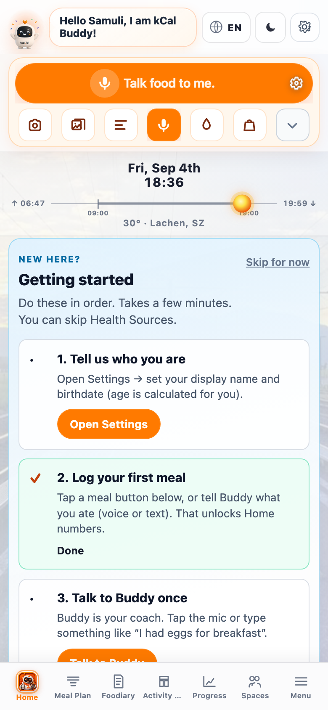
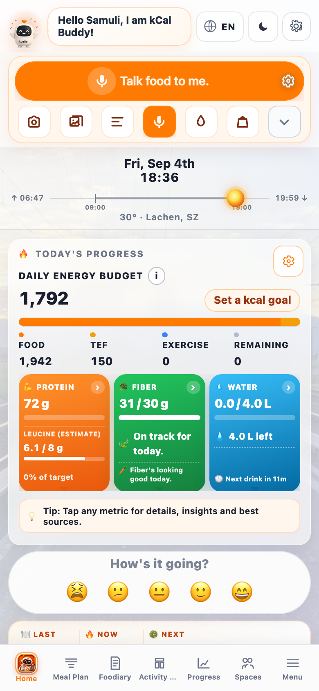

Help · Quick Guide
⚡ Cheatsheet
Quick Guide
What to do · How to do it · Why it matters — with real screenshots from the app.
Why do this
Health is thousands of small decisions. Buddy makes the next one easier — and Progress only moves when meals are logged with real nutrition.
Today's Progress fills from Buddy logs — energy, protein, fibre, water.
Rows without energy leave Progress at 0. Log on Home first; edit in Foodiary.
My job isn't perfection — it's helping you get a little healthier every day.
What to do
One loop. Repeat every meal.
-
1
Open Home
Your daily desk — log up top, Progress in the middle, tabs below.
-
2
Log the meal (Buddy)
Text, camera, gallery, or mic. Confirm when Buddy asks.
-
3
Check Today's Progress
Numbers should move after a log with kcal.
-
4
Fix details in Foodiary
Grams, time, leftovers — same diary Progress reads.

home-overview.png
How to do it
Use the orange strip. Don't hunt for Foodiary first.
Log with quick actions

home-quick-actions.png
- Talk food / Log — primary path (text or voice)
- Camera / gallery — photo of the plate
- Mic — speak the meal
- Water — quick hydration log
Watch the budget fill

home-budget.png
Adding meals only in Foodiary with empty kcal. Start on Home so Buddy estimates land in the diary.
Picture map of every Home control, or the full Academy path.
Home picture guide → Buddy vs Foodiary → Philosophy → Buddy Academy →